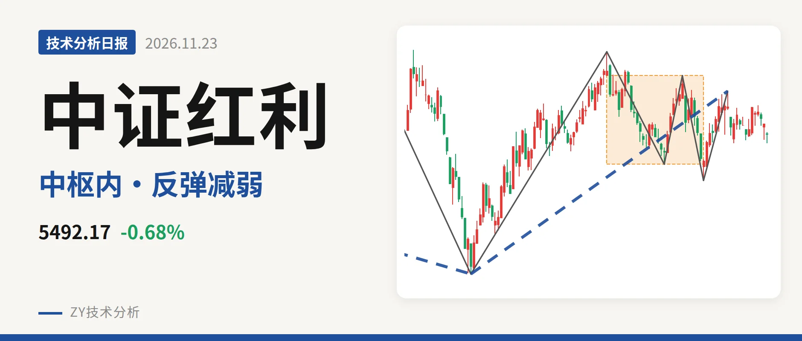
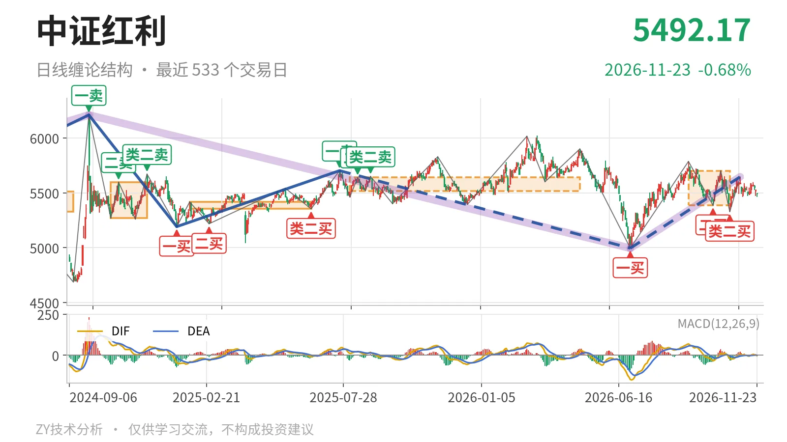
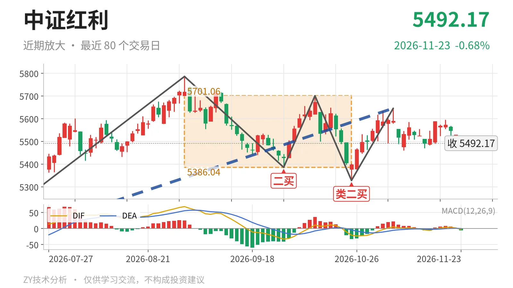

中证红利｜反弹高点续降，5386点下沿待守

最近日线中枢 5386.04—5701.06点，收盘位于中枢之内
一句话：日线反弹高点连续下移，价格回到中枢中轴下方，结构中性偏弱。
🧭 走势结构：更大级别高位整理，日线反弹未确认结束
更大级别三段还在延续，没有结束：2022年11月1日至2024年10月8日的上涨段、2024年10月8日至2026年6月30日的回落段、6月30日至11月4日的回升段都未走完。日线线段里，2025年7月23日至2026年6月30日的下跌线段没有被反向线段破坏，6月30日至11月4日的上涨线段仍在延续，但11月4日之后已经转为未成笔的回落。因此短线不是单边行情，而是日线线段内部的中枢震荡。

📍 中枢与位置：收在最近中枢内，重心略下移
最近一个日线笔中枢形成于9月1日至10月23日，区间为5386.04—5701.06点，中轴5543.55点。最新收盘5492.17点落在中枢内部，距下沿约106点，距上沿约209点。该中枢与2025年8月4日至2026年4月30日的中枢有重叠，但下沿由5518.46点下移到5386.04点，上沿由5639.99点上移到5701.06点，中轴从5579.23点降到5543.55点，中枢重心没有上移。最新价低于中轴，处于中枢内偏弱半区。
🎯 买卖点：三个买点已结束，上方卖区仍有压力
日线笔级别上，6月30日一买4995.49点、9月29日二买5386.04点、10月23日类二买5328.30点所在笔都已结束，不是暂定。三次买点后的反弹高点依次为9月1日5786.14点、10月14日5701.06点、11月4日5646.01点，高点一个比一个低。10月23日类二买后的上涨笔最高到5646.01点，刚好在2025年8月26日类二卖5649.82点附近。买点推动的回升仍被上方卖点区域压制。若后面跌破5328点，10月23日类二买的支撑意义会弱化，只对应更小级别。

⚡ 背驰：反弹不新高，红柱与DIF同步衰减
比较9月29日至10月14日的上涨笔和10月23日至11月4日的上涨笔：前者上涨约5.8%，红柱面积85、DIF高点11.1；后者上涨约6.0%，红柱面积65、DIF高点5.7。两者价格高点从5701点降到5646点，没有创新高，红柱面积和DIF高点同步走低。这是反弹高点一个比一个低、力度递减的盘背结构，不是“新高不新强”。最新MACD的DIF为-2.4，回到零轴下方，柱体-5.2，弱势没有改变。
🛡 关键位置观察：上看5701点，下看5386点
上方压力看5701点附近，这是最近中枢上沿，也是10月14日反弹高点。若能重新站上5701点，回落更可能只是中枢扩展，6月30日以来的上涨线段还有延续余地。下方看5386点附近，这是最近中枢下沿。一旦跌破5386点且反抽站不回该点上方，结构上构成日线笔级别三卖；再往下则是10月23日低点5328点一线。当前最新价5492点低于中轴5544点，结构中性偏弱。
⚠️ 本文为基于公开行情数据的缠论技术结构记录，由程序自动计算并生成，仅供学习交流，不构成任何投资建议。市场有风险，投资需谨慎。